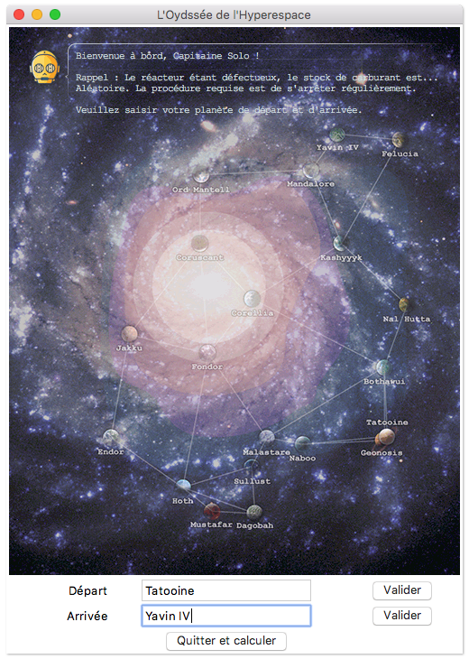
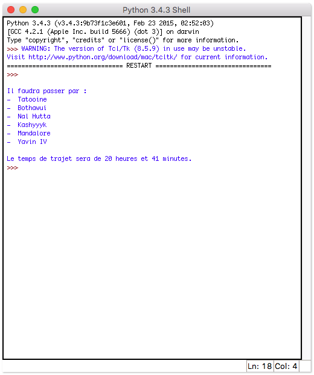

University projects
A Hyperspace Odyssey (March-May 2016)
Goal: Developping a Python program with a Tkinter interface, in order to solve the travelling salesman problem, thanks to the Dijkstra algorithm. In order to add our personal touch to the shortest path problem, we set the context a long time ago, in a galaxy far, far away....
Context: Final project of the Computer Science specialty, work in two-person team, Charles Gide high school (Uzès, France).
Tools:

Final grade: 20/20 (100/100)


 Français
Français
Made with by Benoît Pannetier © 2022
Finding Space by Takahiro Sakamoto